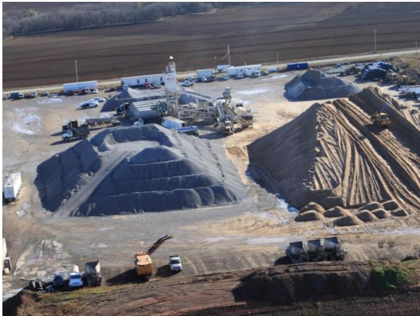
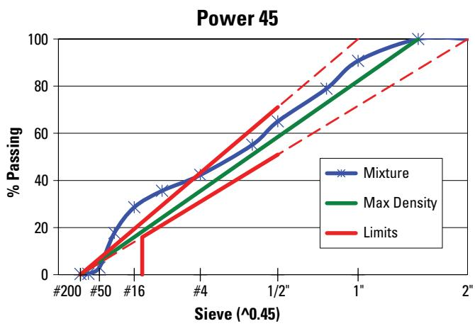
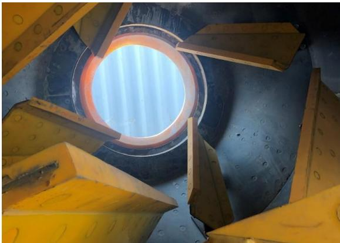
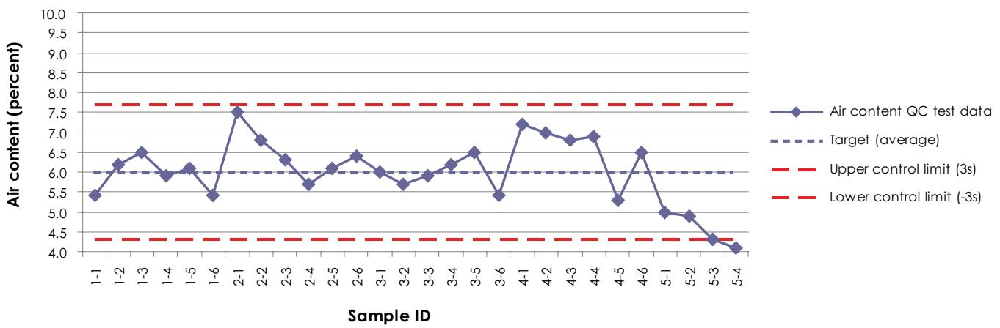
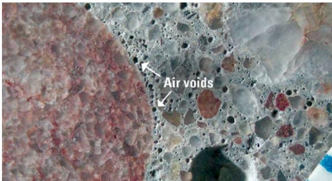

Concrete Mixing Uniformity and Time
Concrete mixing uniformity and the associated mix time are the coordinated practices that ensure all constituents—aggregates, cementitious material, water, admixtures, and entrained air—are evenly distributed throughout a batch so that strength, workability, durability and defect‑free performance are achieved[1][2]. The process requires loading the mixer within its rated capacity, operating it at the manufacturer‑specified speed, and executing a mix cycle long enough (typically 60–90 seconds for portable plants) to attain homogeneity while preserving the stabilized air‑void system, yet short enough to avoid over‑mixing that degrades that system[1][2]. Uniformity is verified by a mixer‑uniformity test—discharging the batch into a windrow and sampling for aggregate segregation, consistent air content, and slump variation—ensuring that the blend meets design tolerances for water‑cement ratio, admixture activation, and air content[1][2].
Sources (3)
Purpose and applicability
Concrete mixing uniformity together with proper mixing time solves the problem of uneven component distribution that would otherwise cause inconsistent strength, workability, durability and defects such as segregation, bleeding, or incomplete activation of chemical admixtures. The guides emphasize that “Thorough mixing is required to evenly distribute all mixture constituents until the mix is uniform and entrained air bubbles are stabilized,” and that “A few seconds of mixing time can mean a difference in the distribution of the components and the homogeneity of the mixture.” By operating mixers within rated capacities, using manufacturer‑recommended speeds, and selecting a mix cycle long enough to achieve the desired uniformity yet short enough to preserve the entrained air‑void system—typically 60 to 90 seconds—the process creates a homogeneous batch that meets required air content, water demand and performance criteria for demanding applications such as airport concrete. [1][2]
[1] — Ch. 6 (p. 148), Ch. 8 (pp. 231–232); [2] — App. F (pp. 472–473)
When a stationary mixer is available at a central‑mix plant and the goal is to achieve a uniformly blended concrete before it leaves the plant, the central‑mix method should be used with an appropriate mixing duration—typically on the order of one minute for portable plants—to ensure complete integration of all ingredients. If water or admixture adjustments must be made at the jobsite, or if the concrete needs to remain in motion during transport to a distant location, shrink‑mixing or truck‑mixing is preferred because the final mixing can be completed in the vehicle. When defects such as segregation or bleeding arise, the first corrective action is to review and possibly extend the mix time before altering other parameters. [1]
[1] — Ch. 8 (p. 232)
Required inputs
The guides require that all dry ingredients be batched by weight and that water and chemical admixtures may be batched by volume. Accurate weighing is mandatory, using scales “Use scales accurate to ±0.2 percent tested within each quarter of the total scale capacity,” and water must be added “Add water to an accuracy of 1 percent of the required total mixing water.” Aggregate moisture must be continuously monitored; the stockpile is kept at or above its saturated‑surface‑dry condition and any deviation is corrected by adjusting water addition, because “Aggregate moisture content (monitored using probes in the stockpile) … greatly affect concrete quality and uniformity.” Proper aggregate gradation, including fine natural sand with a fineness modulus below 2.7 or blended manufactured sand, and coarse aggregates of consistent size, together with Type IL cement of Blaine fineness about 5000‑5500 cm²/g, are specified to meet the trial‑batch design that anticipates increased water demand and higher admixture dosages.
Mixing time is dictated by equipment type, proportions, gradations, amount and types of admixtures, and ambient temperature; “The required mix time varies depending on the equipment, proportions, and materials used; gradations of aggregates; amount and types of admixtures; temperature, etc.” Short mixing periods will reduce entrained air: “Short mixing periods will reduce the amount of entrained air and will likely lead to a nonuniform mixture.” Uniformity is verified by a mixer uniformity test as required by UFGS 32 13 14.13, which references CRD‑C 55 for on‑site plants and ASTM C94 for transit‑mix trucks: “The conventional technique is to perform a mixer uniformity test. UFGS 32 13 14.13 specifies CRD-C 55 (ACOE, 1992) for on-site plants and ASTM C94 for Ready-Mix Plants using Transit Mix Trucks.” The test includes wet‑sieve sampling to detect segregation, conventional air testing and petrography to confirm air content consistency, and a series of slump tests to reveal variations in water content or admixture effectiveness: “Running a wet sieve test on each sample allows for the identification of aggregate segregation. Running conventional air tests and performing petrography on core samples can confirm the consistency of the air content.” and “A series of slump tests will identify variations in water content or water‑reducing admixture effectiveness based on mixing time.”
Site conditions that support uniformity include clean handling equipment, dedicated bins for each coarse‑aggregate size to preserve batch‑to‑batch consistency, weather‑driven monitoring of stockpile moisture, and the ability to adjust water or admixtures at the jobsite when a truck mixer is used: “Changes to the mixture’s water and admixtures are possible at the jobsite if a truck mixer is used to transport the mixture.” [1][2]
The importance of maintaining consistent aggregate quality is illustrated in the following figure.

Aerial view of a concrete aggregate stockpile area with processing equipment. [2]The image displays an industrial site containing large piles of coarse and fine aggregates alongside a central batching plant structure. By maintaining these stockpiles and monitoring their moisture levels, operators can ensure that all constituents are evenly distributed throughout the mix to achieve uniformity.
[1] — Ch. 8 (pp. 231–232); [2] — App. F (pp. 472–473)
The design package for concrete mixing uniformity and time incorporates a set of verified controls. Mixers must be limited to their capacity – “Mixers should not be loaded above their rated capacities” – and operated at the speed prescribed by the maker, “should be operated at the mixing speed recommended by the manufacturer.” The rotation rate is defined in revolutions per minute or peripheral feet per minute – “Rotation rate of a mixer drum or of the paddles in an open‑top, pan, or trough mixer when mixing a batch expressed in revolutions per minute (rpm) or in peripheral feet per minute of a point on the circumference at maximum diameter.”
Mix cycle length is a critical parameter. The guides state that “The duration of mixing (mix cycle) is important, and it must be sufficiently long to achieve the desired mix uniformity but not too long because this can negatively impact the entrained air‑void system,” with portable batch plants typically targeting “mix times will typically range from 60 to 90 seconds.” Required mixing time for a specific airport concrete mix is established by trial batching and a mixer‑uniformity test as mandated in UFGS 32 13 14.13 – “UFGS 32 13 14.13 specifies CRD-C 55 (ACOE, 1992) for on-site plants and ASTM C94 for Ready-Mix Plants using Transit Mix Trucks.”
Batching tolerances are strictly defined. Scales must meet the accuracy clause – “Use scales accurate to ±0.2 percent tested within each quarter of the total scale capacity,” – and water addition is limited to a one‑percent margin – “Add water to an accuracy of 1 percent of the required total mixing water.” Moisture content of both fine and coarse aggregates must be verified at least twice daily – “Periodic moisture tests on the fine and coarse aggregate are necessary (at least twice a day).”
Pre‑construction testing includes calibration of weighing equipment, moisture verification, and a mixer uniformity test. The test procedure calls for discharging a batch into a windrow – “The intent is to discharge a batch of mixed concrete into a windrow to sample the concrete at specified points along the windrow’s length, avoiding the very ends.” Samples are taken along the windrow (excluding the ends) and subjected to: - aggregate segregation analysis – “Running a wet sieve test on each sample allows for the identification of aggregate segregation,”; - air‑content verification – “conventional air‑content testing or petrography of cores to verify air consistency”; and - workability checks – “A series of slump tests will identify variations in water content or water‑reducing admixture effectiveness based on mixing time.”
Acceptance is achieved when aggregate distribution, air content, and slump values are consistent across the sampled locations, confirming that the mix has been uniformly blended without over‑ or under‑mixing. [1][2]
The following figure illustrates the sample power distribution for this mixing process.

A Power 45 chart displaying the aggregate grading of a mixture against maximum density and limit lines. [1]The figure displays a Power 45 plot where sieve sizes are arranged along the horizontal axis and the cumulative percentage passing is plotted on the vertical axis. It compares the aggregate grading of a specific mixture against theoretical maximum density lines and specified limits to evaluate particle distribution.
[1] — Ch. 6 (p. 148), Ch. 8 (pp. 231–232), Ch. 10 (p. 324); [2] — App. F (pp. 472–473)
Equipment and personnel
Concrete mixing uniformity and timing depend on a small, defined crew. A plant foreperson oversees the clean, consistent operation of front‑end loaders and other heavy equipment that move raw materials. The plant operator controls the batching sequence, loads weighed or metered ingredients into a stationary mixer, monitors scale accuracy and water‑cement ratios, and can adjust the sequence to meet production needs or resolve incompatibilities. Truck‑mixer operators (often the driver) complete the final mix in the truck, may adjust water or admixture quantities on site, and are responsible for removing any free water or excess release compounds after washing or rainfall to prevent contamination. All personnel must monitor aggregate moisture content to maintain proper water‑cement ratios. [1]
[1] — Ch. 8 (pp. 231–232)
Work sequence
Before the concrete‑mixing uniformity and time interval can begin, the entire batch must be assembled and the mixer must be readied. All dry ingredients are first batched by weight, water and admixtures measured by volume, and introduced into the mixer in the prescribed sequence (e.g., initial water with coarse aggregate, followed by cementitious materials and a final water wash). The operator verifies that scales meet accuracy tolerances before loading. Once the batch is fully loaded, the mixer must be prepared: it must not be loaded above its rated capacity, must be set to the manufacturer‑specified mixing speed, and the blades inspected to confirm they are free of wear or hardened‑concrete coating. In parallel, before initiating the concrete mixing uniformity and time procedure, the contractor must first determine the appropriate mixing time for the specific mixture design by conducting trial batches and performing a mixer‑uniformity test in accordance with the applicable specifications (UFGS 32 13 14.13, CRD‑C 55 or ASTM C94). These preliminary trials establish baseline homogeneity, segregation control, air‑content consistency, and proper activation of admixtures, ensuring that the subsequent mixing operation meets quality requirements. [1][2]
The following figure illustrates the required condition of the mixing equipment before operations begin.

Clean mixer drum and blades with minimal wear. [2]The image displays the interior of a concrete mixer, showing yellow mixing paddles attached to the rotating shaft within a dark cylindrical drum. This inspection is a necessary preparatory step for the concrete mixing uniformity and time process, as worn equipment can compromise the homogeneity of the batch.
[1] — Ch. 6 (p. 148), Ch. 8 (pp. 231–232); [2] — App. F (pp. 472–473)
- Determine mixing time – Contractors first determine the appropriate mixing time for each mix design through trial batches and mixer‑uniformity testing.
- Load verification – Ensure the mixer is not overloaded (“Mixers should not be loaded above their rated capacities”) and operate it at the manufacturer’s recommended speed (“should be operated at the mixing speed recommended by the manufacturer.”).
- Initial charging (dry‑batch) – Introduce a first portion of water together with coarse aggregate into the drum (“In a dry‑batch process, the first ingredients into the drum are usually a portion of the water and a portion of the coarse aggregate”).
- Add remaining solids – Shut off the water and add the rest of the aggregates and all cementitious materials, blending until the cement is fully incorporated (“The water is shut off and aggregates and cementitious materials are combined until all of the cementitious material is in the drum.”).
- Final water and fine‑aggregate rinse – Introduce the remaining water along with the last of the fine aggregate to wash any material adhering to the drum walls (“The final portion of water goes in with the last of the aggregates to clean and wash any cementitious material clinging to the mixer’s hoppers, rear fins, and chutes”).
- Mixing duration – Continue mixing for the established period; typical portable central‑mix plants require 60–90 seconds (“mix times will typically range from 60 to 90 seconds”), long enough to achieve uniform distribution but not so long as to damage the entrained‑air system (“The duration of mixing (mix cycle) is important, and it must be sufficiently long to achieve the desired mix uniformity but not too long because this can negatively impact the entrained air‑void system.”).
- Discharge – The mixer then completely mixes the components before discharging the concrete into a delivery vehicle or into a windrow for testing (“The mixer then completely mixes the components before discharging the concrete into a delivery vehicle”).
- Uniformity verification – Perform the conventional mixer‑uniformity test: discharge the batch into a windrow and sample at specified points away from the ends (“The intent is to discharge a batch of mixed concrete into a windrow to sample the concrete at specified points along the windrow’s length, avoiding the very ends.”). Run a wet sieve test on each sample to detect aggregate segregation (“Running a wet sieve test on each sample allows for the identification of aggregate segregation.”), conduct conventional air tests and petrography on core specimens to verify consistent air content (“performing conventional air tests and petrography on core specimens to verify consistent air content”), and carry out slump tests to reveal water‑content or admixture effectiveness variations that indicate under‑ or over‑mixing (“conducting a series of slump tests to reveal any water‑content or admixture effectiveness variations that indicate under‑or over‑mixing”).
- Post‑mix inspection – After discharge, inspect mixer blades for wear or hardened concrete buildup and correct any condition that could impair future mixing (“Mixer blades should be routinely inspected for wear or coating with hardened concrete”). [1][2]
[1] — Ch. 6 (p. 148), Ch. 8 (pp. 231–232); [2] — App. F (pp. 472–473)
The source indicates that the only timing constraint for concrete mixing is the length of the mix cycle: it must be long enough to achieve a uniform blend and stabilize entrained air, yet not so long that it degrades the air‑void system; no specific numeric limits are provided. Consequently, operators should monitor the mix duration qualitatively, ensuring sufficient time for uniformity without excessive mixing. [1]
[1] — Ch. 6 (p. 148)
Staging and logistics
Concrete mixing uniformity and the required mixing time are constrained primarily by weather‑related moisture conditions and ambient temperature, while no explicit site‑access or spatial limitations were noted in the source. Aggregate stockpiles must be kept at or above saturated surface dry (SSD) to avoid water absorption during batching; the quantity of water needed to achieve SSD varies with prevailing weather, necessitating periodic moisture testing of both fine and coarse aggregates—at least twice daily—to adjust water‑cement ratios accurately. After rain or drum washing, any free water or release compounds must be removed from truck drums to prevent excess moisture entering the mix. In addition, temperature influences the duration of mixing: hotter or colder conditions can lengthen or shorten the time required for a homogeneous batch, and the mix time also depends on equipment type, aggregate gradations, and admixture dosage. [1]
[1] — Ch. 8 (pp. 231–232)
Quality control and acceptance
The characteristics that must be inspected or tested for concrete‑mixing uniformity and appropriate mixing time are: 1. Uniform distribution of constituents and entrained air – the mix must be “Thorough mixing is required to evenly distribute all mixture constituents until the mix is uniform and entrained air bubbles are stabilized”. 2. Mix cycle duration – the mixing period must be long enough for homogeneity but not excessive, as “The duration of mixing (mix cycle) is important, and it must be sufficiently long to achieve the desired mix uniformity but not too long because this can negatively impact the entrained air‑void system.”. 3. Mixer speed – the rotation rate of drums or paddles should be recorded, defined as “Rotation rate of a mixer drum or of the paddles in an open‑top, pan, or trough mixer when mixing a batch” (rpm or peripheral feet per minute). 4. Condition of mixing blades – routine visual inspection for wear or concrete coating is required: “Mixer blades should be routinely inspected for wear or coating with hardened concrete, both of which can detract from effective mixing.”. 5. Aggregate moisture content – periodic testing is mandated: “Periodic moisture tests on the fine and coarse aggregate are necessary (at least twice a day).” This factor directly influences segregation risk as noted by “Aggregate moisture content and the potential for segregation greatly affect concrete quality and uniformity.”. 6. Material weighing accuracy – scales must meet tight tolerances: “Use scales accurate to ±0.2 percent tested within each quarter of the total scale capacity.” Water addition must be precise: “Add water to an accuracy of 1 percent of the required total mixing water.”. 7. Segregation assessment – both visual checks and laboratory testing are required. Visual observation is implied by the need to monitor moisture and segregation, while a wet‑sieve analysis provides confirmation: “Running a wet sieve test on each sample allows for the identification of aggregate segregation.”. 8. Air‑content consistency – conventional air tests together with petrographic examination verify uniform entrained‑air levels: “Running conventional air tests and performing petrography on core samples can confirm the consistency of the air content.”. 9. Water‑content or admixture performance – slump testing reveals variations caused by mixing time: “A series of slump tests will identify variations in water content or water‑reducing admixture effectiveness based on mixing time.”. 10. Mix‑time recording and calculation – each batch’s elapsed mixing seconds must be logged and an average derived after subtracting a standard 35‑second cycle: “recording the mix time for each batch in seconds, then calculating an average mix time after subtracting a standard cycle time of 35 seconds.”. 11. Fly ash temperature – the temperature of any fly‑ash addition is measured: “fly ash sample temp.”. 12. Cementitious heat generation – a simple coffee‑cup test detects premature heat release: “cementitious heat generation (coffee cup)”. 13. False set detection – when relevant, the presence of false set must be checked: “false set”. [1][2][3]
The following figure illustrates air content control charts to demonstrate how these parameters are monitored for consistency.

Air content control chart [3]The figure displays a statistical process control chart tracking air content QC test data across multiple sample IDs. It includes horizontal lines representing the target average and upper/lower control limits to monitor consistency.
[1] — Ch. 6 (p. 148), Ch. 8 (pp. 231–232), Ch. 10 (p. 324); [2] — App. F (pp. 472–473); [3] — App. A (p. 120)
During batching the plant continuously monitors aggregate moisture with on‑site probes, and formal moisture tests of both fine and coarse aggregates are performed at least twice each day. Measurements of concrete mixing uniformity are taken for every batch; for stationary mixers the mixing time is recorded from the moment batching of cement and aggregate finishes until discharge begins, while for a truck‑mounted mixer the mixing interval is expressed by counting drum revolutions at the set speed, yielding one value per load. [1]
[1] — Ch. 8 (pp. 231–232), Ch. 10 (p. 324)
Expected performance and maintenance
The guides identify a range of failures that arise when concrete mixing uniformity or mixing time are not properly controlled. Over‑loading a mixer or operating it at an incorrect speed prevents proper blending, leading to segregation and insufficient stabilization of air bubbles. A mix cycle that is too short leaves constituents unevenly distributed, while an excessively long cycle can damage the entrained‑air system. Worn or concrete‑coated blades lose cutting action, further reducing uniformity. Batching inaccuracies—especially when cement and aggregates are measured by volume—introduce errors because of bulking and variable moisture, and inadequate scale accuracy or water metering also contributes to non‑uniform mixes. If aggregate moisture exceeds its saturated‑surface‑dry condition without water adjustment the water‑to‑cement ratio is exceeded, producing low strength; conversely, overly dry aggregate absorbs added water, causing stiffening. These deficiencies manifest as segregation, bleeding, cracking, finishing problems, variable slump, inconsistent air content, shrinkage cracking of pavements, and a false set where workability is lost before placement. [1][2][3]
The following figure illustrates how these mixing deficiencies can result in localized clustering of air voids.

Micrograph showing air void clustering around a coarse aggregate particle in hardened concrete. [1]The image displays a cross-section of concrete where a large, reddish aggregate is surrounded by a dense concentration of small, circular air voids within the cement paste matrix. This visual evidence illustrates “accumulations of air voids forming around aggregate particles,” which results in reduced strength and increased permeability.
[1] — Ch. 6 (p. 148), Ch. 8 (pp. 231–232); [2] — App. F (pp. 472–473); [3] — App. A (p. 120)
The guides require that “Mixers should not be loaded above their rated capacities” and that they be “operated at the mixing speed recommended by the manufacturer.” To preserve blend quality, “Mixer blades should be routinely inspected for wear or coating with hardened concrete,” and any blade wear or concrete buildup must be repaired promptly. Batch weighing accuracy is maintained by “Use scales accurate to ±0.2 percent tested within each quarter of the total scale capacity,” while water dosing follows “Add water to an accuracy of 1 percent of the required total mixing water.” Moisture control is achieved through “Periodic moisture tests on the fine and coarse aggregate are necessary (at least twice a day).” Additionally, “The plant foreperson must ensure a consistent and clean operation of the front-end loaders and other heavy equipment that move raw materials at the batch plant.” For ongoing uniformity verification, “The conventional technique is to perform a mixer uniformity test,” which involves discharging a batch into a windrow, sampling away from the ends, and “Running a wet sieve test on each sample allows for the identification of aggregate segregation.” Air‑content consistency is checked by standard air tests or petrography, and “A series of slump tests will identify variations in water content or water‑reducing admixture effectiveness based on mixing time,” signaling under‑ or over‑mixing that may require adjustment or repair. [1][2]
The following figure illustrates the practical application of these verification methods through uniformity testing.
 Field technicians conducting concrete uniformity testing at a construction site. [2]
Field technicians conducting concrete uniformity testing at a construction site. [2]
The image shows several workers in safety vests and hard hats gathered around portable tables set up on the ground, which are being used to process samples of wet material.
[1] — Ch. 6 (p. 148), Ch. 8 (pp. 231–232); [2] — App. F (pp. 472–473)
References
- P. Taylor, T. Van Dam, L. Sutter, and G. Fick, "Integrated Materials and Construction Practices for Concrete Pavement: A State-of-the-Practice Manual," National Concrete Pavement Technology Center, Rep. Part of InTrans Project 13-482; TPF-5(286), 2019. [Online]. Available: https://www.cptechcenter.org/wp-content/uploads/2019/12/IMCP_manual.pdf
- T. L. Cavalline, G. Voigt, J. Stempihar, J. Lafrenz, T. Van Dam, M. Boyle, D. Johnson, and Rohan Reddy Jonna, "Best Practices Manual: Quality Control and Quality Acceptance of Concrete Airport Pavement," University of North Carolina at Charlotte, Rep. ACPTP-2022-4, 2025. [Online]. Available: https://www.cptechcenter.org/wp-content/uploads/2026/03/ACPTP-2022-4_QC_QA_of_concrete_airfield_pvmt_manual_w_cvr_508.pdf
- G. J. Fick, "Testing Guide for Implementing Concrete Paving Quality Control Procedures," National Concrete Pavement Technology Center/Center for Transportation Research and Education Iowa State University, 2008. [Online]. Available: https://www.cptechcenter.org/wp-content/uploads/2018/03/testing_guide.pdf